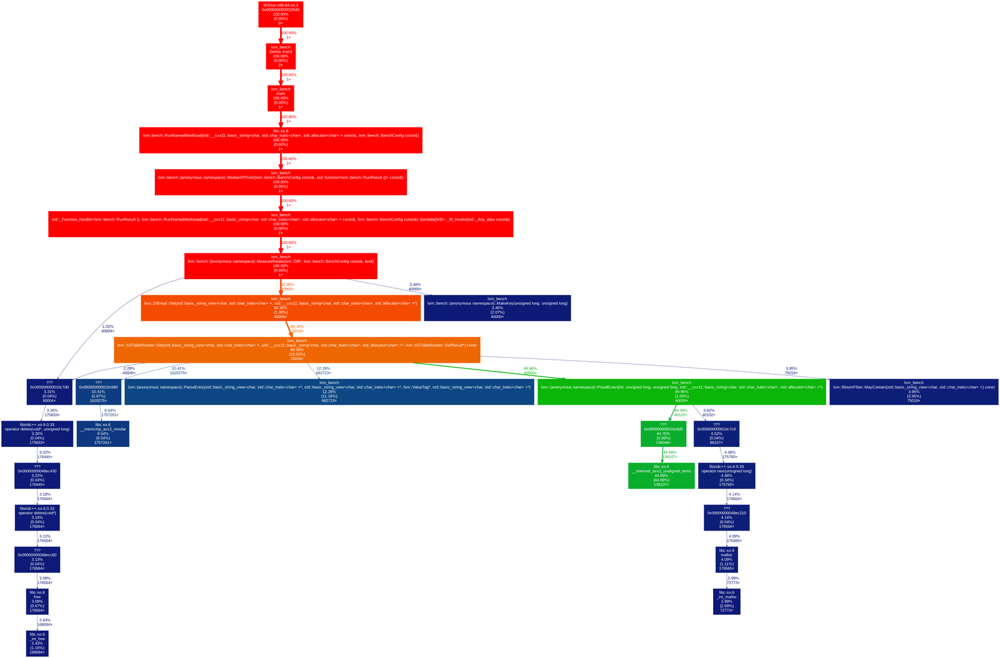
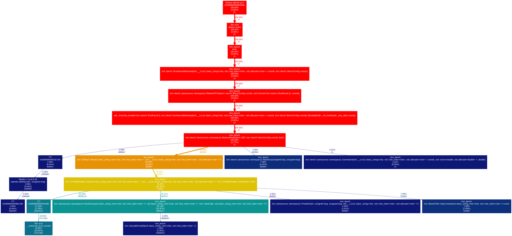

A single-node key-value store written from scratch in C++20. It has a write-ahead log with crash recovery, immutable SSTables with a sparse index and bloom filters, and size-tiered background compaction. The engine uses only the standard library.
| workload | ops/sec | p50 µs | p95 µs | p99 µs | p99.9 µs |
|---|---|---|---|---|---|
| read-random-zipfian | 851,974 | 0.87 | 1.58 | 2.51 | 28.00 |
| read-random-uniform | 763,024 | 1.12 | 1.78 | 2.51 | 30.81 |
| mixed-50-50 | 10,998 | 31.38 | 227.12 | 353.06 | 495.21 |
| fill-random | 5,375 | 172.35 | 290.71 | 430.14 | 702.70 |
| fill-sequential | 5,311 | 176.35 | 285.14 | 456.52 | 627.72 |
The tail is where the honest answers live. Reads stay at 2.5 µs through p99 but reach about 30 µs at p99.9, which is background compaction and scheduler preemption on a shared vCPU. The worst single write in a fill run is about 34 ms, because a memtable flush runs under the write lock. That is a real limitation, listed below, and the benchmark puts a number on it.
Callgrind showed one dominant hotspot in the read path.
SSTableReader::Get allocated a fresh block buffer on every
lookup, and resize() zero filled about 4 KiB that
pread then overwrote immediately. Almost half the read loop was
a memset whose result was thrown away.
The fix was a reused thread_local buffer plus a
PreadInto that skips the zero fill.
| read loop cost | before | after |
|---|---|---|
| memset (wasted work) | 166.5M | 1.2M |
| malloc and free | 21.5M | 5.1M |
| ParseEntry (real work) | 41.6M | 41.6M |
| memcmp (real work) | 35.6M | 35.6M |
The two real work rows are identical before and after. Only the waste disappeared, which is what separates a genuine optimisation from a benchmark that quietly stopped doing the work. In wall clock terms it was 620k to 710k ops/sec across five trials, though those ranges overlap on a shared vCPU, so the instruction count is the number worth quoting.


{kind=link}
{kind=link}